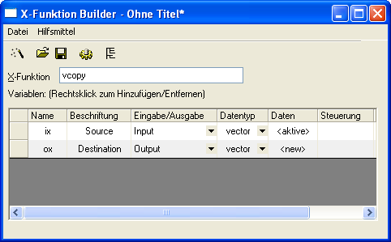
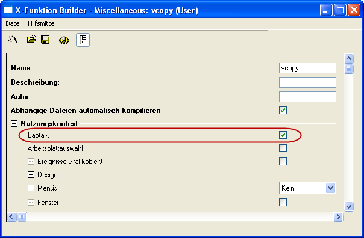
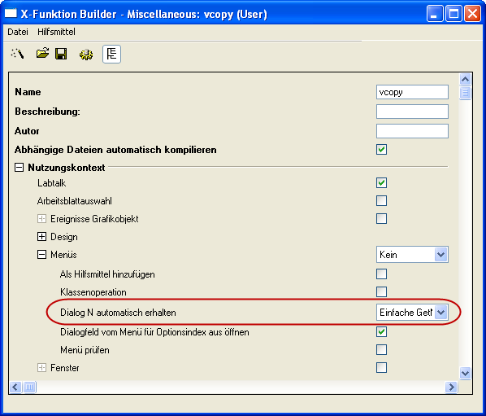
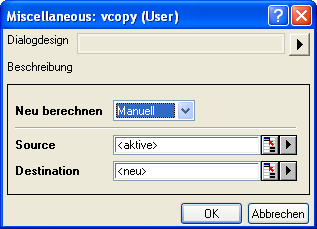

Einführung in X-Funktionen
Zusammenfassung
X-Funktionen bieten eine strukturierte Programmierumgebung zum Erstellen von Origin-Hilfsmitteln. Anders als beim einfachen GetN ist es dem Anwender durch das Erstellen von Hilfsmitteln mit Hilfe der X-Funktionen möglich, sich auf den eigentlichen Datenverarbeitungscode zu konzentrieren und sich nicht um die Codes für die Benutzeroberfläche kümmern zu müssen.
Die meisten Dialogfelder/Funktionen in Origin 8 sind X-Funktionen, und viele von ihnen können vom Menü und von der Befehlszeile aus ausgeführt werden. Die Flexibilität der laufenden X-Funktionen macht sie zu einer attraktiven Möglichkeit, Origin benutzerdefiniert anzupassen.
Origin-Version mind. erforderlich: 8.0 SR0
Was Sie lernen werden
- Erstellen einer X-Funktion,
- Erstellen des Zugriffs auf die X-Funktion über Skript,
- Verwenden der X-Funktion im Dialogmodus.
Erstellen einer X-Funktion
- Wählen Sie Hilfsmittel: X-Funktion Builder oder drücken Sie F10, um das Dialogfeld X-Funktion Builder zu öffnen.
- Setzen Sie Name, Beschriftung und Daten der 1. Variable auf ix, Quelle und <aktiv>.
- Klicken Sie mit der rechten Maustaste in das Listenfeld und wählen Sie im Kontextmenü Variablen hinzufügen aus.
- Setzen Sie Name, Beschriftung, Eingabe/Ausgabe und Daten der 2. Variablen auf ox, Ziel, Ausgabe und <neu>.
- Wählen Datei: Speichern, um die X-Funktion als vcopy zu speichern.
- 
- Klicken Sie auf
 , um den Code Builder zu öffnen.
, um den Code Builder zu öffnen.
- Fügen Sie die folgenden Codes in die Funktion vcopy im Code Builder ein.
void vcopy(const vector& ix, vector& ox)
{
if (!ix || !ox)
XF_THROW(CER_NO_DATA);
ox = ix;
}
Über Skript zugängliche Funktionen
- Klicken Sie auf die Schaltfläche Zurück zum Dialog im Code Builder.
- Speichern Sie im X-Funktion Builder Ihre Änderung.

- Öffnen Sie durch Klicken die X-Funktion in der Baumansicht.
- Öffnen Sie den Zweig Nutzungskontext. Stellen Sie sicher, dass das Kontrollkästchen Labtalk aktiviert ist.
- 
- Speichern Sie die X-Funktion und schließen Sie das Dialogfeld X-Funktion.
- Füllen Sie Spalte(A) des aktiven Arbeitsblatts mit Zeilennummern.
- Geben Sie folgendes Skript im Befehlsfenster ein. Spalte(A) wird in Spalte(B) kopiert.
vcopy col(a) col(b)
Dialogmodus der X-Funktion
- Öffnen Sie das Dialogfeld X-Funktion und öffnen Sie VCOPY.OXF in der Baumansicht.
- Öffnen Sie den Zweig Nutzungskontext.
- Öffnen Sie den Zweig Menüs, stellen Sie sicher, dass Einfache GetNBox aus dem Listenfeld Dialog N automatisch erhalten ausgewählt ist.
- 
- Speichern Sie die X-Funktion und schließen Sie das Dialogfeld X-Funktion.
- Geben Sie das folgende Skript im Befehlsfenster ein. Der Dialog von VCOPY.OXF wird geöffnet
vcopy -d- 